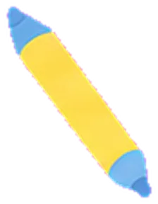

子どもが
運営者の
答え子どもが
ホーム › 講座を
地域連携
この
実際どうだった？
子育てや
先に

サニー先生運営者は2026年5月30日〜8月1日に、
| 受講した | 2026年5月30日〜8月1日 |
|---|---|
| コース | 土曜日の |
| 受け方 | オンライン |
| 支払った | 270,000円 |
| 修了 | 8月2日の |
金額や
この
わたしは
申し込む
それでも、
良かったことも、
この

くわしく
モヤン費用が

決め手だった
決め手は、
もう
費用
申し込んだ
日程
曜日・時間帯の
仲間
クラスごとに
運営者わたしは、
試験が
合格したら、
コツコツ進められる
授業の
反対に、
わたし自身、
な
受けた
子どもが
運営者の
答え子どもが
働き方
運営者の
答え卒業後の
卒業後の
運営者の
答え卒業後の

スタッフの
養成講座を
答え運営者も、

すぐに、
地域連携
答え受けたい
横に

くわしく
モヤン朝9時から
講義だけでなく、ロープレや
初日は、
まわりの
ロープレは、
はじめは
授業とは
それぞれの
課題には、
コツコツやらないと
正直に
わからない
運営者課題は、

くわしく
モヤン子どもが
両立は
子育て
初日に
映り込みは、
映り込みが
2回目の
相談して、
運営者お菓子代は、
わが
自然の
でも、
そこで、
サニー先生の

くわしく
モヤン受ける
わたしが
モヤン自分から
運営者わたしも
養成講座で
営業でも、

くわしく
モヤン何を
カメラの
PR広告リンクです
わたしが
Zoomの
ほかの
せっかくなら、
よく

この
キャリコン学びピクニック運営者
3児の
数字や
出典
運営者の
運営者の
受講を